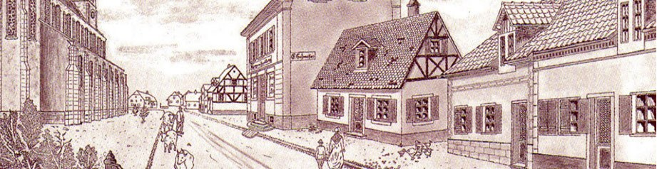

Accueil › Histoire de Kingersheim
Huit siècles à parcourir
De « Kemingsen » en 1195 à la ville d'aujourd'hui : chaque fait est accompagné de sa source.
Frise chronologique
Parcourez les dates clés
Touchez une date, ou utilisez les flèches du clavier.
Hier et aujourd'hui
Glissez pour comparer


AutrefoisAujourd'huiMaquette de démonstration : les deux vues ne montrent pas le même endroit. La société peut fournir de vraies paires « avant / après » (carte postale ancienne et photo actuelle du même lieu) pour les remplacer.
Grandes périodes
Quatre temps forts
Lieux marquants
Là où l'histoire s'est écrite
Personnages
Des noms à retenir
D'autres personnages et lieux seront ajoutés avec les textes de la société (mines de potasse, usine textile, écoles...).